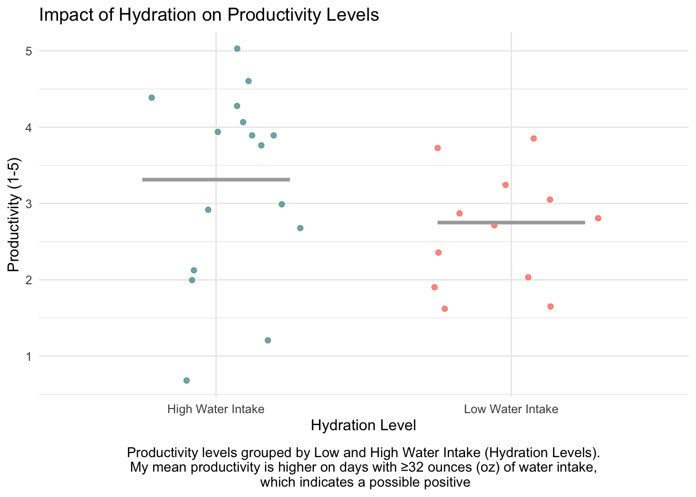

# read in packages
library(tidyverse) # load tidyverse
library(here) # load here
library(gt) # load gt
library(janitor) # load janitor
library(readxl) # load readxlenvs193ds_homework_3
Part 1. Set up tasks
[GitHub Repository] (https://github.com/norsmith025/ENVS-193DS_homework-03.git)
Part 2. Problems
Problem 1. Personal data
I can sort my hydration levels into 2 groups, Low Water Intake and High Water Intake, and find the mean productivity level, from a scale of 1-5, for each group. This would be informative because I think I am generally more productive on days where I am more hydrated.
Visualization
# create "my_data" object from "my_data.csv" from "data" folder my_data <- read_csv("data/my_data.csv", skip = 1) # clean data and create columns my_data <- my_data %>% mutate(Water = as.numeric(`Water (oz)`), # convert to numeric values and store in column "Water" Productivity = as.numeric(`Productivity (1-5)`), # convert to numeric values and store in column "Productivity" Hydration_Level = if_else(Water >= 32, "High Water Intake", "Low Water Intake")) # create new column "Hydration_Level" based on Water with threshold of 32 oz # create the plot ggplot(my_data, aes(x = Hydration_Level, y = Productivity, color = Hydration_Level)) + geom_jitter(width = 0.3, alpha = 0.8) + # add jittered points stat_summary(fun = mean, geom = "crossbar", width = 0.5, color = "darkgrey") + # add horizontal bar to show mean productivity for both hydration groups scale_color_manual(values = c("High Water Intake" = "cadetblue", "Low Water Intake" = "salmon")) + # manually set colors for both hydration groups labs(x = "Hydration Level", # label x-axis y = "Productivity (1-5)", # label y-axis title = "Impact of Hydration on Productivity Levels", # create title caption = "Productivity levels grouped by Low and High Water Intake (Hydration Levels).\nMy mean productivity is higher on days with ≥32 ounces (oz) of water intake,\n which indicates a possible positive") + # add caption theme_minimal() + # use minimal theme theme(plot.caption = element_text(hjust = 0.5, size = 10, margin = margin(t = 10))) + # align caption theme(legend.position = "none") # hide legend
Add caption: Productivity levels grouped by Low and High Water Intake (Hydration Levels). My mean productivity is higher on days with ≥32 ounces (oz) of water intake, which indicates a possible positive relationship between hydration and productivity.
Table presentation
# create summary_table and calculate summary statistics
summary_table <- my_data %>% # pipe "my_data" into summary table
group_by(Hydration_Level) %>% # group data by "Hydration_Level"
# calculate summary statistics for each group
summarise(Mean_Productivity = round(mean(Productivity, na.rm = TRUE), 1), # Mean of "Productivity", rounded to 1 decimal place, ignore missing values
Min_Productivity = min(Productivity, na.rm = TRUE), # minimum "Productivity" value, ignore missing values
Max_Productivity = max(Productivity, na.rm = TRUE)) # maximum "Productivity" value, ignore missing values
summary_table %>% # use gt to create formatted table from above summary
gt() %>% # convert summary_table to a gt table object
tab_header(title = "Productivity Summary Based on Hydration Level") %>% # add table title
cols_label(Hydration_Level = "Hydration Level", # change name to "Hydration Level"
Mean_Productivity = "Mean Productivity", # change name to "Mean Productivity"
Min_Productivity = "Minimum", # change name to "Minimum"
Max_Productivity = "Maximum") # change name to "Maximum"| Productivity Summary Based on Hydration Level | |||
|---|---|---|---|
| Hydration Level | Mean Productivity | Minimum | Maximum |
| High Water Intake | 3.3 | 1 | 5 |
| Low Water Intake | 2.8 | 2 | 4 |
Problem 2. Affective visualization
An affective visualization for my personal data could be something like a quilt with various colors to represent different productivity levels and the size of each square being large or small depending on high or low hydration levels. It could also include small symbols within each square to show which extraneous factors could also be involved, like sleep, caffeinated drinks, screen time, and outside time. This visualization would make the data I collected easy to follow without having to interperet the data that heavily since the colors and symbols will represent all of the contributing factors and resulting productivity levels. All this being said, I do not think I have the time and/or materials to make a quilt with this project, even though I think this would be the best representation, so I will opt for a drawing that conveys the same message, drawing the squares and symbols instead of quilting them.
This is the rough sketch of the above visualization, I still need to work out some of the proportions, color scheme, etc., but that will be worked out for the next part (question c.).
This is a rough draft of my visualization:
I decided to go with abstract shapes instead of squares to make it look more cohesive, and in my final draft I will add lines/bands in each blob to indicate the extraneous factors instead of symbols.
In this piece, I am showing the correlation between my productivity and my hydration, where the large shapes are high hydration and the smaller ones are low hydration and the various colors represent my productivity; the bands (not present yet) represent how many caffeinated drinks consumed, whether or not I spent time outside that day, how much sleep I got, and how much screen time I had that day. I took my influence from abstract art pieces I have seen and am creating this piece on Procreate on my iPad, where I started with a rough sketch of the shapes, with labels for which date each one correlated to, and then added colors based on my recorded productivity from that day.
Problem 3. Statistical Critique
In Homework 2, I looked at a T-test and a one-way ANOVA from the study “Functional indicators of stream health: a river-basin approach” by Feio et al., however, I cannot access this article anymore as it is now behind a paywall. For this statistical critique I am using a similar article “Towards a functional assessment of stream integrity: A first large-scale application using leaf litter decomposition” by Brosed, Jabiol, and Chauvet, who also use an ANOVA in their analysis.

This is the figure based on their ANOVA results.
The authors visually represented their statistics in the figure by using boxplots to show the distribution of leaf-litter decomposition rates across different stream quality categories. The x-axes shows the stream quality categories and the y-axes displays the decomposition rates and they are both logically positioned for intuitive readability. They also show some summary statistics like the medians, interquartile ranges, outliers within the boxplots so topical conclusions may be inferred, but they are missing all the raw data points so a deep analysis cannot be done off of these plots alone.
The authors handle “visual clutter” well, since each subplot is separated and everything is color-coded which helps increase the readability and clarity without adding clutter. The data:ink ration is good, since the figure does a good job avoiding unnecessary elements while still being able to convey the key results found in through their ANOVA.
While I think the figure does an adequate job of conveying their data, some improvements could be made. I think that they could overlay jittered raw data points over the boxplots in order to show the distribution and sample size, which would help determine whether or not their non-significant p-values are due to low sample sizes or other errors. Along the same line, I would add the sample size for each category below the plots so the viewer can use it to contextualize the results in the plots more effectively. I would also add more information with a caption explaining the decomposition types and colors in the plot to improve understanding for the viewer, as well as clarifying some of the other values gathered from the ANOVA beyond just the p-value, since this would help improve the transparency of the data found.